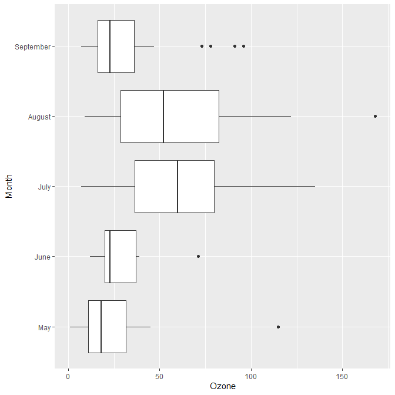
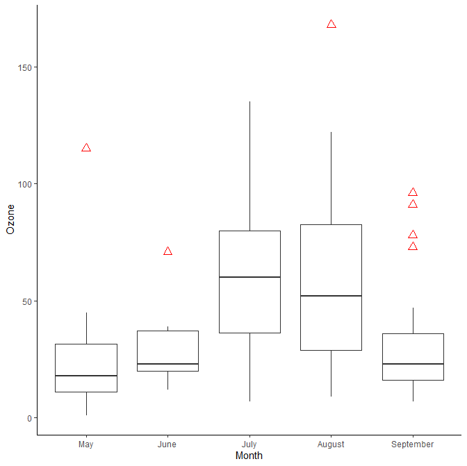
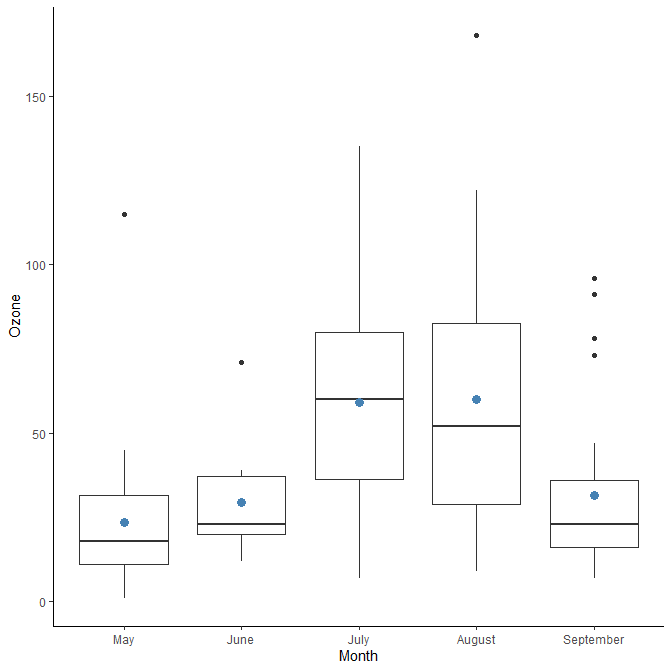
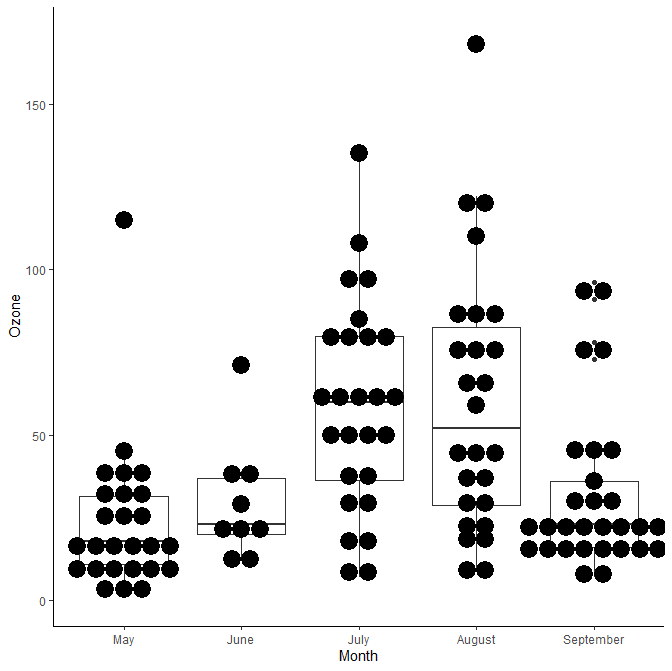
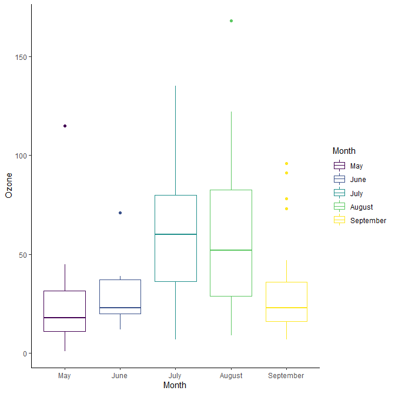
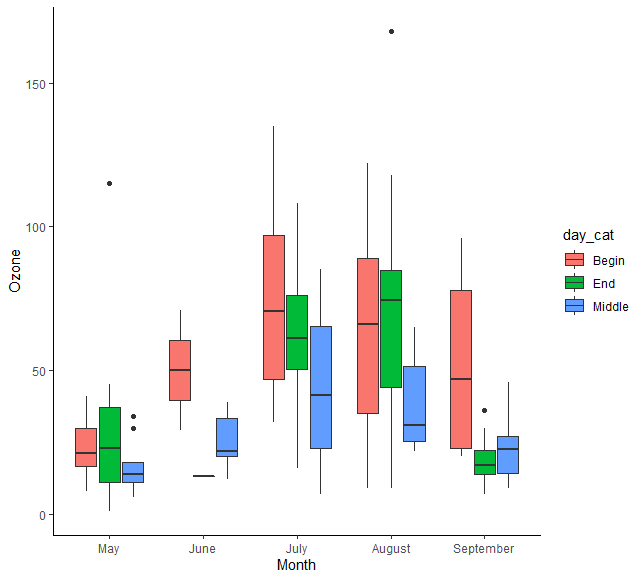
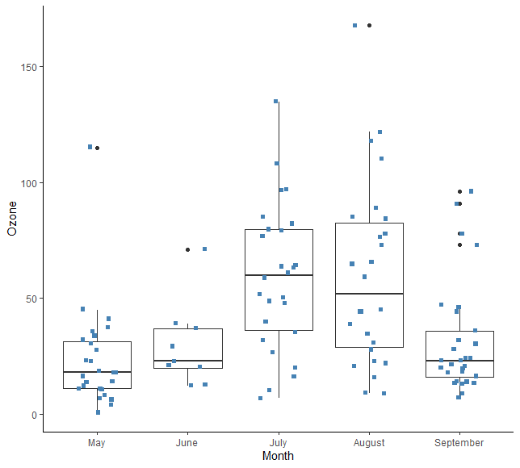
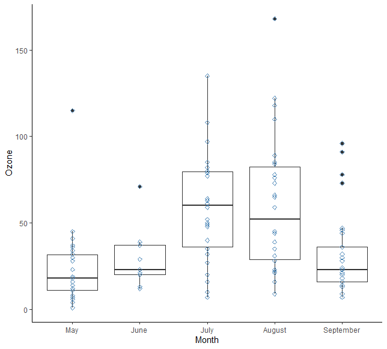
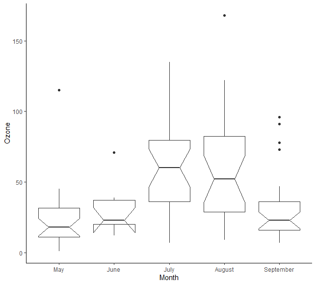

상자도표 작성 방법 (예제 포함)
ggplot2 라이브러리의 기하학적 오브젝트인 geom_boxplot()을 사용하여 상자도표를 그릴 수 있다. 상자 도표는 4분위수(quantile)로 데이터 분포를 시각화하고 특이치(outlier)의 존재를 탐지하는 데 도움이 된다.
우리는 ggplot2로 상자도표를 소개하기 위해 airquality데이터 세트를 사용할 것이다. 이 데이터 세트는 1973년 5월부터 9월까지 뉴욕의 공기 질을 측정한다. 데이터 세트에는 154개의 관측치가 포함되어 있다. 우리는 다음 변수를 사용할 것이다 :
- Ozone: 수치 변수
- Wind: 수치 변수
- Month: 5월에서 9월. 수치 변수
이 튜토리얼에서는 다음에 대하여 학습한다.
상자도표 작성
첫 번째 상자도표를 작성하기 전에 다음과 같이 데이터를 조작해야 한다 :
- 1단계: 데이터 불러오기
- 2단계: 불필요한 변수 제외
- 3단계: factor 수준에서
Month변환 - 4단계:
Month를Begin,Middle,End등의 세 단계로 구분하는 새로운 범주형 변수를 생성. - 5단계: 누락된 관측치 제거
이 모든 단계는 dplyr과 파이프라인 연산자 %>%로 이루어진다.
xxxxxxxxxxlibrary(dplyr)library(ggplot2)# Step 1data_air <- airquality %>%#Step 2select(-c(Solar.R, Temp)) %>%#Step 3mutate(Month = factor(Month, order = TRUE,labels = c("May", "June", "July", "August", "September")),#Step 4day_cat <- factor(ifelse(Day < 10, "Begin", ifelse(Day < 20, "Middle", "End"))))
좋은 관행은 glimpse() 함수로 데이터 구조를 확인하는 것이다.
xxxxxxxxxxglimpse(data_air)
결과 :
xxxxxxxxxx## Observations: 153## Variables: 5## $ Ozone <int> 41, 36, 12, 18, NA, 28, 23, 19, 8, NA, 7, 16, 11, 14, ...## $ Wind <dbl> 7.4, 8.0, 12.6, 11.5, 14.3, 14.9, 8.6, 13.8, 20.1, 8.6...## $ Month <ord> May, May, May, May, May, May, May, May, May, May, May,...## $ Day <int> 1, 2, 3, 4, 5, 6, 7, 8, 9, 10, 11, 12, 13, 14, 15, 16,...## $ day_cat <fctr> Begin, Begin, Begin, Begin, Begin, Begin, Begin, Begi...
데이터 세트에 결측치(NA)가 있다. 이것들을 제거한다.
xxxxxxxxxx# Step 5data_air_nona <-data_air %>% na.omit()
기본 상자도표
월(Month)별 오존(Ozone) 분포를 기본 상자도표로 그려본다.
xxxxxxxxxx# Store the graphbox_plot <- ggplot(data_air_nona, aes(x = Month, y = Ozone))# Add the geometric object box plotbox_plot +geom_boxplot()
코드 설명 :
추가 사용을 위해 그래프 저장
- box_plot: 그래프를 variable box_plot 변수에 저장하면, 나중에 사용하기도 좋고, 복잡한 코드 라인을 추가하지 않아도 된다.
기하학적 오브젝트인 상자도표 추가
- 데이터 세트
data_air_nona를ggplot()에 전달한다. aes()인수 안에는 x축과 y축 추가.+기호는 R이 코드를 계속 읽으라는 것을 의미한다. 그것은 코드를 짧게해서 더 읽기 쉽게 만든다.geom_boxplot()을 사용하여 상자도표 작성
- 데이터 세트
결과 :

그래프의 방향 변경
그래프의 면을 옆으로 돌릴 수 있다.
xxxxxxxxxxbox_plot +geom_boxplot()+coord_flip()
코드 설명 :
- box_plot : 저장한 그래프를 사용한다. 그래프에 새 정보를 추가할 때마다 모든 코드를 다시 쓰는 것을 피한다.
- geom_boxplot()): 상자도표 작성
- codes_flip() : 그래프 옆으로 돌리기
결과 :

특이치의 색 변경
여러분은 특이치의 색, 모양 그리고 크기를 변경할 수 있다.
xxxxxxxxxxbox_plot +geom_boxplot(outlier.colour = "red",outlier.shape = 2,outlier.size = 3) +theme_classic()
코드 설명 :
- outlier.colour="red" : 특이점의 색 제어
- outlier.shape=2 : 특이치의 모양 변경. 2는 삼각형.
- outlier.size=3 : 삼각형의 크기 변경. 그 크기는 숫자에 비례.
결과 :

요약 통계치 추가
상자도표에 요약 통계치를 추가할 수 있다.
xxxxxxxxxxbox_plot +geom_boxplot() +stat_summary(fun.y = mean,geom = "point",size = 3,color = "steelblue") +theme_classic()
코드 설명 :
stat_summary()는 상자도표에 요약 정보를 추가할 수 있게 함fun.y인수는 반환된 통계치를 통제한다. 여기서는 평균 사용.- 참고 : 최소값, 최대값 등 기타 통계치 이용 가능. 동일한 그래프에 둘 이상의 통계치를 표시할 수 있음.
geon = "point" : 점으로 평균 표시.
size=3 : 점의 크기
color ="steelblue" : 점의 색
결과 :

점이 있는 상자도표
다음 그림에서는 점 도표 레이어를 추가한다. 각각의 점은 각각의 관측치를 나타낸다.
xxxxxxxxxxbox_plot +geom_boxplot() +geom_dotplot(binaxis = 'y',dotsize = 1,stackdir = 'center') +theme_classic()
코드 설명 :
geom_dotplot()을 사용하여 점 추가 가능binaxis='y' : y축을 따라 점의 위치를 변경. 기본적으로 x축.
dotsize=1 : 점 크기
stackdir='center' : 점 누적 방법: 네 가지 값:
- "up" (기본값),
- "down"
- "center"
- "centerwhole"
결과 :

상자도표의 aes() 제어
상자의 색 변경
그룹의 색을 변경할 수 있다.
xxxxxxxxxxggplot(data_air_nona, aes(x = Month, y = Ozone, color = Month)) +geom_boxplot() +theme_classic()
코드 설명 :
- 그룹의 색상은 aes() 매핑에서 제어된다. 월(Month)에 따라 색을 변경할 수 있다.
결과 :

복수 그룹의 상자도표
여러 그룹을 추가하는 것도 가능하다. 측정일(day_cat)에 따라 대기질 차이를 시각화할 수 있다.
xxxxxxxxxxggplot(data_air_nona, aes(Month, Ozone)) +geom_boxplot(aes(fill = day_cat)) +theme_classic()
코드 설명 :
- 기하 오브젝트의 aes() 매핑이 표시할 그룹을 제어함(이 변수는 factor이어야 함)
- aes(fill= day_cat)는 x-축에 매월 세 개의 상자를 만들 수 있다.
결과 :

흩어진 점(Jittered Dots)을 가진 상자도표
점을 보여주는 또 다른 방법은 점들이 흩어져 있는 것이다. 범주형 변수로 점들을 시각화하는 편리한 방법이다.
이 방법은 이산 데이터(discreste data)의 중복을 방지한다.
xxxxxxxxxxbox_plot +geom_boxplot() +geom_jitter(shape = 15,color = "steelblue",position = position_jitter(width = 0.21)) +theme_classic()
코드 설명 :
geom_jitter()는 각 점들이 갖는 일종의 부식(decay) 현상을 추가한다.shape=15: 점의 모양을 바꾼다. 15는 정사각형을 나타낸다.- color = "steelblue" : 점 색상 변경
- position=position_jitter(width = 0.21) : 겹치는 점을 배치하는 방법.
position_jitter(width = 0.21)는 x축에서 점을 20% 이동한다는 것을 의미한다. 기본값은 40%.
Output:

흩어진 점으로 그려진 첫 번째 그래프와 점법으로 그려진 두 번째 그래프의 차이를 확인할 수 있다.
xxxxxxxxxxbox_plot +geom_boxplot() +geom_point(shape = 5,color = "steelblue") +theme_classic()
결과 :

V자형(Notched) 상자도표
geom_boxplot()의 흥미로운 특징은 v자형(notched) 상자도표이다. v자형 도표는 상자를 중앙값 주변을 좁힌다. v자형 상자도표의 주요 목적은 그룹 간 중앙값의 유의성을 비교하는 것이다. 노치가 겹치지 않을 때, 두 그룹이 서로 다른 중앙값를 가지고 있다는 강력한 증거가 된다. 노치(notch)는 다음과 같이 계산된다.
여기서, IQR : 사분범위, n : 관측치 수
xxxxxxxxxxbox_plot +geom_boxplot(notch = TRUE) +theme_classic()
코드 설명 :
- geom_boxplot(notch=TRUE): v자형 상자도표 작성
결과 :

요약
다음의 표에 상자도표의 다양한 유형을 요약한다 :
| 오브젝티브 | 코드 |
|---|---|
| 기본 상자도표 | ggplot(df, aes( x = x1, y =y)) + geom_boxplot() |
| 방향 바꾸기 | ggplot(df, aes( x = x1, y =y)) + geom_boxplot() + coord_flip() |
| v자형 상자도표 | ggplot(df, aes( x = x1, y =y)) + geom_boxplot(notch=TRUE) |
| 흩어진 점을 갖는 상자도표 | ggplot(df, aes( x = x1, y =y)) + geom_boxplot() + geom_jitter(position = position_jitter(0.21)) |